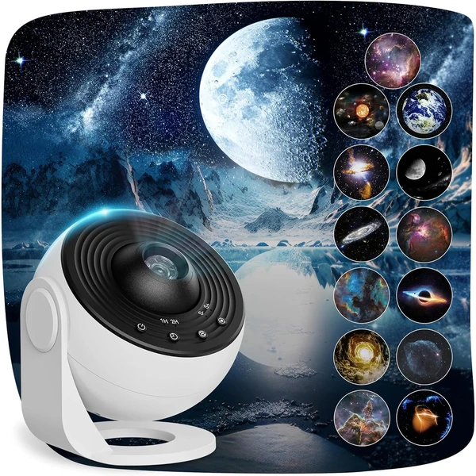

👶 9 años
Macchiatto Proyector de Estrellas
Un proyector que llena paredes y techos con imágenes de galaxias y constelaciones en alta definición. Incluye 13 discos distintos para explorar el espacio y rotación de 360° que simula el movimiento del cielo.
⭐
¿Por qué nos gusta?
- ✔13 escenarios distintos de galaxias y estrellas.
- ✔Rotación de 360° con movimiento realista.
- ✔Temporizador de apagado automático incluido.
💬
Lo que más destacan las familias
Entre los comentarios más habituales aparece lo relajante que resulta como luz nocturna antes de dormir. La variedad de discos incluidos también se valora porque permite cambiar de ambiente cada noche.